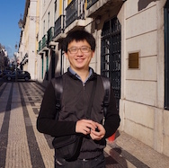

Dr. Zan Li 李赞
Associate Professor 副教授
- zanli at jlu.edu.cn
- +86 1333 154 6926
Biography
目前就职于吉林大学通信工程学院，副教授，硕士生导师，唐敖庆学者；瑞士伯尔尼大学博士生副导师；北京波尔通信算法专家（兼）。入选吉林省青年成长科技计划, 吉林大学优秀青年教师（重点资助）。曾任阿里巴巴资深算法工程师负责传感器融合定位。2016年在瑞士伯尔尼大学获得博士学位（summa cum laude，最高荣誉毕业生），当年唯一获得Fritz-Kutter Award博士毕业生（瑞士计算机博士最佳论文）。 请对无线通信、智能感知、频谱感知方向感兴趣的同学联系我！我们将一起合作进行国际前沿的科学研究，我们将提供弹性工作时间、国际交流和公司实习机会！
Academic Projects
-
基于毫米波点云的众包自主室内定位技术研究国家自然基金面上项目, 项目负责人January 2022 - December 2025
-
基于毫⽶波雷达的高精度室内SLAM技术研究吉林省科技厅青年成长科技计划, 项目负责人January 2021 - December 2022
-
DVB-S2系统仿真清华大学横向合作课题，项目负责人December 2020 - May 2021
-
智能频谱分析北京波尔通信，项目负责人April 2020 - December 2020
-
5G网络环境下的多信息融合群智感知定位技术研究吉林省科技厅（学科布局项目），项目负责人January 2020 - December 2022
-
基于多类地标和深度强化学习轨迹融合的群智感知室内定位算法研究国家自然基金委（青年项目），项目负责人January 2019 - December 2021
-
基于智能手机的智能导诊定位平台开发企业横向合作课题，项目负责人2019 - 2020
-
吉林大学优秀青年教师重点资助项目吉林大学，项目负责人2020 - 2022
-
吉林大学海外人才引进启动项目吉林大学，项目负责人2017 - 2019
-
多传感器融合的众包定位阿里巴巴集团，项目负责人July 2016 - May 2017
-
基于软件无线电技术的OFDM传输平台开发企业合作横向课题， 项目负责人2015 - 2016
-
SwissSenseSynergy (Sensor Fusion based Indoor Positioning)Swiss National Fundation (瑞士国家基金)， 参与Januray 2015 - April 2016
-
In3DGuide (Passive Positioning based SDR)FP7 Eurostar (欧洲第七框架Eurostar项目)， 参与April 2012 - November 2013
Selected publications
-
WiFi-RITA Positioning: Enhanced Crowdsourcing Positioning based on Massive Noisy User Traces, Zan Li (Corresponding Author) , X. Zhao, Z. Zhao, T. Braun, IEEE Transactions on Wireless Communications 2021, (中科院一区)
-
Updating Radio Maps Without Pain: An Enhanced Transfer Learning Approach, J. Yang, X. Zhao, Zan Li (Corresponding Author) , IEEE Internet of Things 2020, (中科院一区)
-
Enhanced and Facilitated Indoor Positioning by Visible-Light GraphSLAM Technique, Y. Yue, X. Zhao, Zan Li (Corresponding Author) , IEEE Internet of Things 2020, (中科院一区)
-
SoiCP: A Seamless Outdoor-Indoor Crowdsensing Positioning System, Zan Li (Corresponding Author), X. Zhao, F. Hu, Z. Zhao, T. Braun, J. Carrera, IEEE Internet of Things 2019, (中科院一区)
-
Crowdsourcing Indoor Positioning by Light-Weight Automatic Fingerprint Updating via Ensemble Learning, J. Yang, X. Zhao, Zan Li (Corresponding Author), IEEE ACCESS 2019, (中科院二区)
-
A Particle Filter-based Reinforcement Learning Approach for Reliable Wireless Indoor Positioning,J. Carrera, Z. Zhao*, T. Braun, Zan Li , IEEE Journal on selected areas in communications (JSAC) 2019, (中科院一区)
-
A Comprehensive Study of Smartphone-based Indoor Activity Recognition via XGBoost, W. Zhang, X. Zhao, Zan Li (Corresponding Author), IEEE Access 2019, (中科院二区)
-
A Narrow-Band Indoor Positioning System by Fusing Time and Received Signal Strength via Ensemble Learning, Zan Li (Corresponding Author), T. Braun, etc., IEEE Access 2018, (中科院二区)
-
Passively Track WiFi Users with an Enhanced Particle Filter using Power-based Ranging, Zan Li (Corresponding Author), T. Braun, IEEE Transactions on Wireless Communication 2017, (中科院一区)
-
A Real-time Robust Indoor Tracking System in Smartphones, J. Carrera, Z. Zhao*, T. Braun, Zan Li, Augusto Neto, Elsevier Computer Communications 2017, (中科院二区)
-
Facilitated and Enhanced Human Activity Recognition via Semi-supervised LightGBM, Y. Zhang, X. Zhao, Zan Li, IEEE Globecom Workshop - AIdSH 2020
-
Crowdsensing Indoor Walking Paths with Massive Noisy Crowdsourcing User Traces, Zan Li, X. Zhao, etc., IEEE Globecom 2018
-
Automatic Construction of Radio Maps by Crowdsourcing PDR Traces for Indoor Positioning, Zan Li, X. Zhao, H. Liang, IEEE ICC 2018
-
Real-time Smartphone Indoor Tracking Using Particle Filter with Ensemble Learning Methods, J. Carrera, Z. Zhao, T. Braun, Zan Li, , IEEE LCN 2018
-
Fine-grained Indoor Tracking by Fusing Inertial Sensor and Physical Layer Information in WLANs, Zan Li, D.B. Acuna, etc., IEEE ICC 2016
-
A Real-time Indoor Tracking System in Smartphones, J. Carrera, Zan Li, etc., ACM MSWIM 2016
-
A Passive WiFi Source Localization System based on Fine-grained Power-based Trilateration, Zan Li, T. Braun, D.C. Dimitrova, IEEE WoWMoM 2015
-
A Time-based Passive Source Localization System for Narrow-band Signal, Zan Li, T. Braun, D.C. Dimitrova, IEEE ICC 2015
-
Methodology for GPS Synchronization Evaluation with High Accuracy, Zan Li, T. Braun, D.C. Dimitrova, IEEE VTC 2015 Spring
-
TDOA for Narrow-band Signal with Low Sampling Rate and Imperfect Synchronization, Zan Li, D.C. Dimitrova, T. Braun, IFIP WMNC 2014, (Best Paper Award)
-
Highly accurate evaluation of GPS synchronization for TDOA localization, Zan Li, D.C. Dimitrova, T. Braun, Wireless Day 2013
Journal Publications
Conference Publications
Teaching Courses
-
Communication Theory (通信原理) (2018, 2019, 2020, 2021, 2022)课件下载-2022
-
Experimental Course of Communication Theory (通信原理综合实验) (2018, 2019, 2020, 2021)
-
Experimental Course of Signal Processing (数字信号处理综合实验) (2018, 2019, 2020, 2021)
-
MIMO-OFDM (2018)
Undergraduate Courses
-
Theory of Signal Detection and Estimation (信号检测与估计理论)（2021, 2022）课件下载-2022